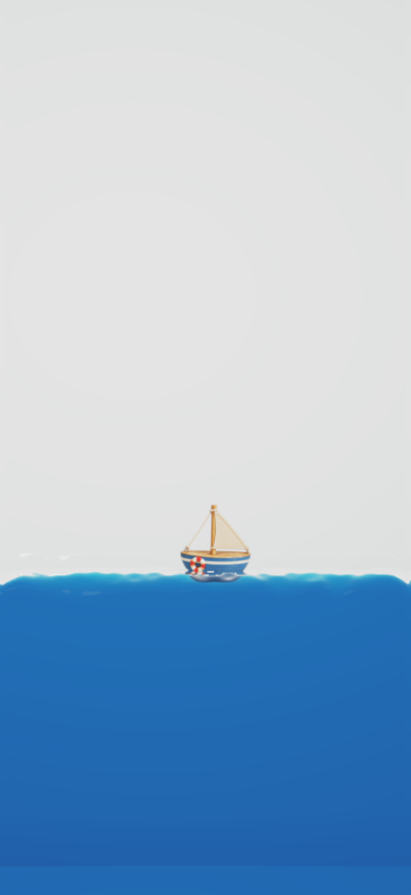
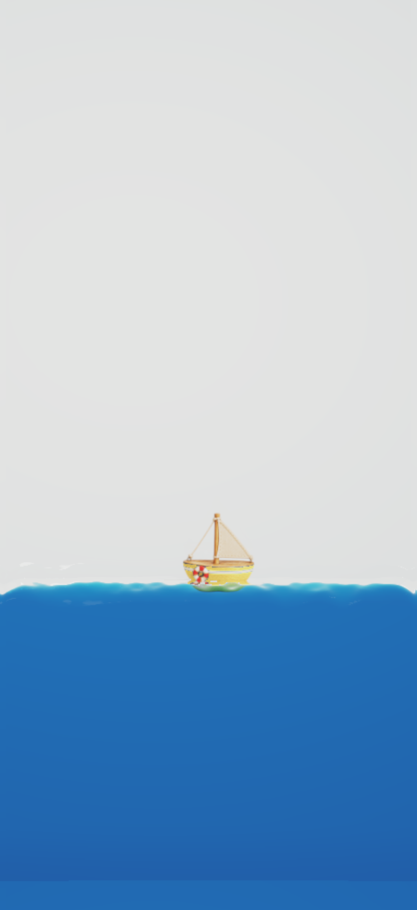
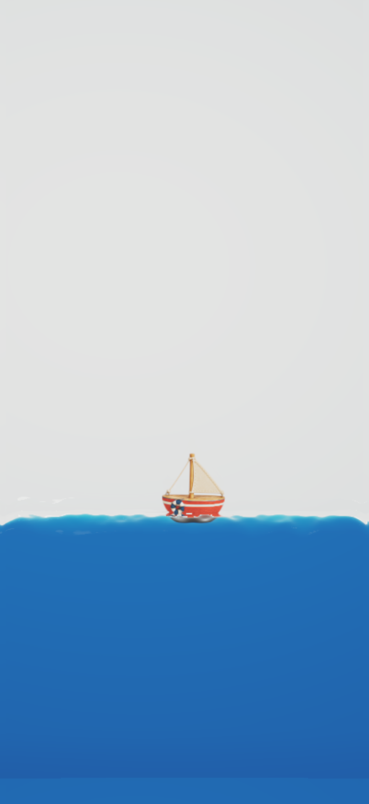
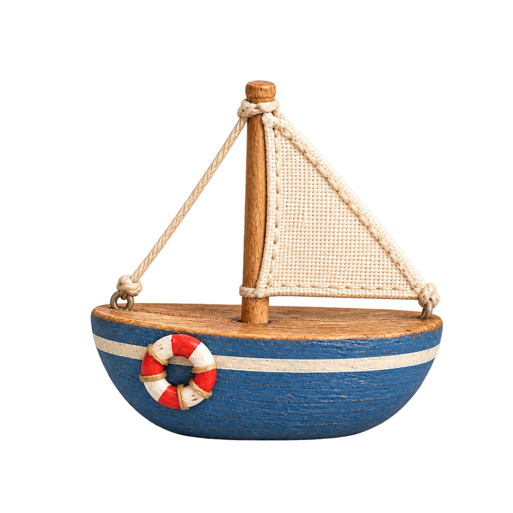

A · 마린 블루
파란 도장 / 상아색 띠 / 빨간 구명환

smallwave네 손안의 작은 바다
BLUE, YOURS.
레퍼런스에 가장 가까운 색. 파란 액체와 차분하게 이어지고, 밝은 띠와 빨간 구명환이 선체를 구분해 줘.
짧고 넓은 나무 선체, 낮은 돛대, 상아색 천 돛 하나. 같은 작은 배에 파랑·노랑·빨강을 입혔어.
첨부 레퍼런스의 비례와 손으로 만든 질감을 따라, 구명환 하나가 달린 작은 장면으로.
파란 도장 / 상아색 띠 / 빨간 구명환

레퍼런스에 가장 가까운 색. 파란 액체와 차분하게 이어지고, 밝은 띠와 빨간 구명환이 선체를 구분해 줘.
노란 도장 / 상아색 띠 / 빨간 구명환

작은 크기에서도 둥근 선체가 가장 밝게 드러나. 따뜻한 노란 도장과 파란 물의 대비가 부드러운 형태를 살려 줘.
빨간 도장 / 상아색 띠 / 남색 구명환

붉은 선체가 작은 포인트로 남아. 구명환은 남색으로 바꿔 같은 색끼리 섞이지 않게 했어.
기본 방향은 A · 마린 블루로 두었어. 더 작게 보여도 선체가 잘 읽히는 쪽은 B · 햇살 옐로, 시선을 끄는 작은 포인트로는 C · 브릭 레드가 좋아.
| 같이 유지한 것 | 달라지는 것 | 이 크기에서 읽는 것 |
|---|---|---|
| 그릇형 선체와 짧은 돛대 돛 하나 · 나무 테두리 · 밧줄 · 구명환 | 선체 도장 색 빨간 배의 구명환 색 | 둥근 윤곽, 돛의 부피, 선체의 띠, 구명환 목재 결과 천 짜임은 가까이 볼 때 드러나 |
| 약 71pt 선체 폭 동일한 물리 상태와 잠기는 위치 | 색 대비와 장면의 온도 | 선체 아래쪽의 물속 색 변화 수면 접점과 기울임 뒤에 따라오는 배 |

선체는 하나의 원본을 공유해. 색을 바꿔도 돛의 기울기, 구명환 크기, 배의 윤곽은 같아.
짧은 나무 돛대, 부드러운 천 한 장, 닳은 도장과 구명환. 배경과 수면은 원본에 포함하지 않았어.
‘앱 화면’은 iPhone 17 Pro 시뮬레이터의 실제 앱 캡처(1206 × 2622 px)야. 일시 정지한 채 설정에서 세 색상을 전환했고 UI 구성은 유지했어. 다른 자세와 영상은 앱의 Metal 렌더러가 만든 804 × 1748 px 출력이며 글자는 비교용 오버레이야. 모두 402 × 874 CSS px로 표시해. 데스크톱의 물리적인 mm 크기는 화면 배율에 따라 달라져. 폭이 좁으면 가로로 넘겨 같은 크기로 비교할 수 있어.
세 색상은 동일한 물 상태에서 렌더돼. 배의 위치·각도·깊이, 기존 부력과 관성, 액체 굴절과 접촉 표현을 함께 사용해. 6초 영상은 합성 기울임 입력을 쓴 렌더 검증이며 실제 iPhone 센서의 성능 측정은 아니야.
배는 투명 이미지 기반의 물체라 회전할 때 새로운 옆면을 드러내는 3D 모델은 아니야. 재질과 물속 합성은 실제 앱 경로를 사용해.
렌더 검증 · 동일 상태·관성 기록 · 변경과 검증 기록 · 앞선 아트 방향